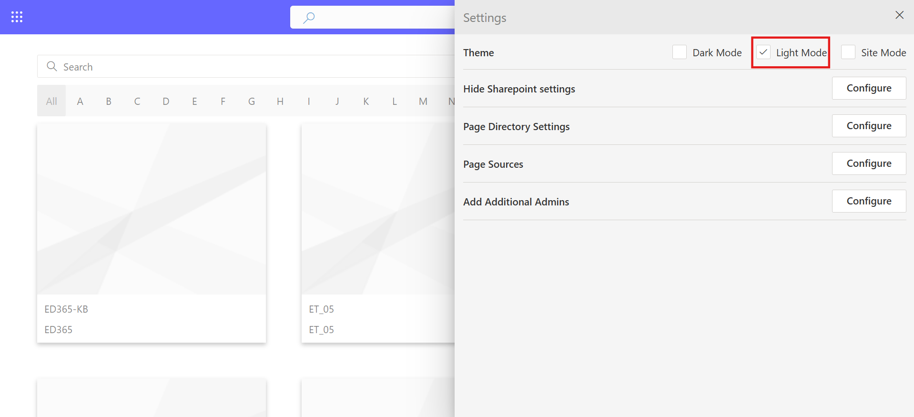
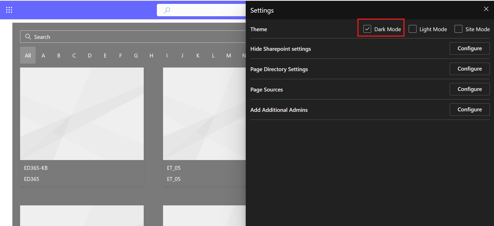
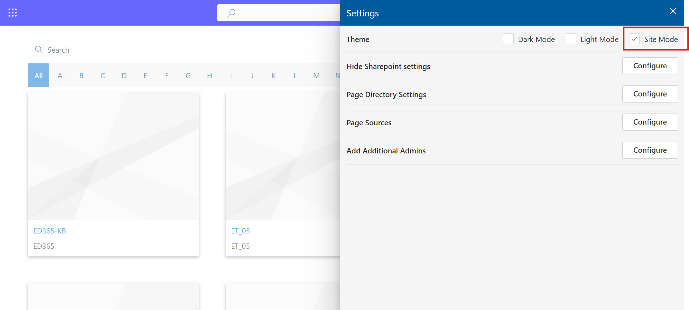

Settings
The Page Directory 365 Settings panel allows administrators to customize the behavior, appearance, and accessibility of the directory. From here, you can configure the theme, control visibility of SharePoint settings, manage page display options, define page sources, and assign additional administrators.
Theme
Select a visual theme for Page Directory 365 to match your SharePoint environment or user preference:
- Light Mode: Provides a bright and clean interface ideal for standard viewing conditions.
 - Dark Mode: Designed for low-light environments, offering a modern and visually comfortable layout.
 - Site Mode: Automatically applies the active SharePoint site theme for consistent branding.

Page Directory Settings
The Page Directory Settings section enables customization of the directory’s display and navigation behavior.
- Show the Search Box: Toggle to display or hide the search bar for quick page lookups.
- Show the A–Z Filters: Displays the alphabetical navigation bar for categorized browsing.
- Show the Site Name: Enables or hides site names beneath each page tile.
- Open Links in a New Tab: Allows users to open selected pages in a separate browser tab.
- Page Types to Display: Choose which page types appear in the directory, including Home pages, News posts, Site pages, Templates, or the current page.
- Layout: Select between Column and Card views for displaying pages.
Page Sources
The Page Sources section allows administrators to manage which site collections or subsites are included in the directory. This provides control over where the Page Directory retrieves its data from.
- Add New Source: Type the site name and click Add to include a new source.
- Status: Activate or deactivate a site’s inclusion using the checkbox.
- Remove: Click the trash icon to delete a source from the directory.
- Pagination Control: Navigate through multiple pages of sources using pagination options.
Add Additional Admins
The Add Additional Admins option allows you to grant administrative privileges to other users who need access to manage settings or content within Page Directory 365.
- User Grid: Displays Name, Email, and Role (Admin/User) for each entry.
- Role Assignment: Administrators can assign or update roles (Admin/User) via the dropdown.
- Search & Pagination: Search by Name, Email and adjust the number of entries displayed (10, 25, or 50 per page).